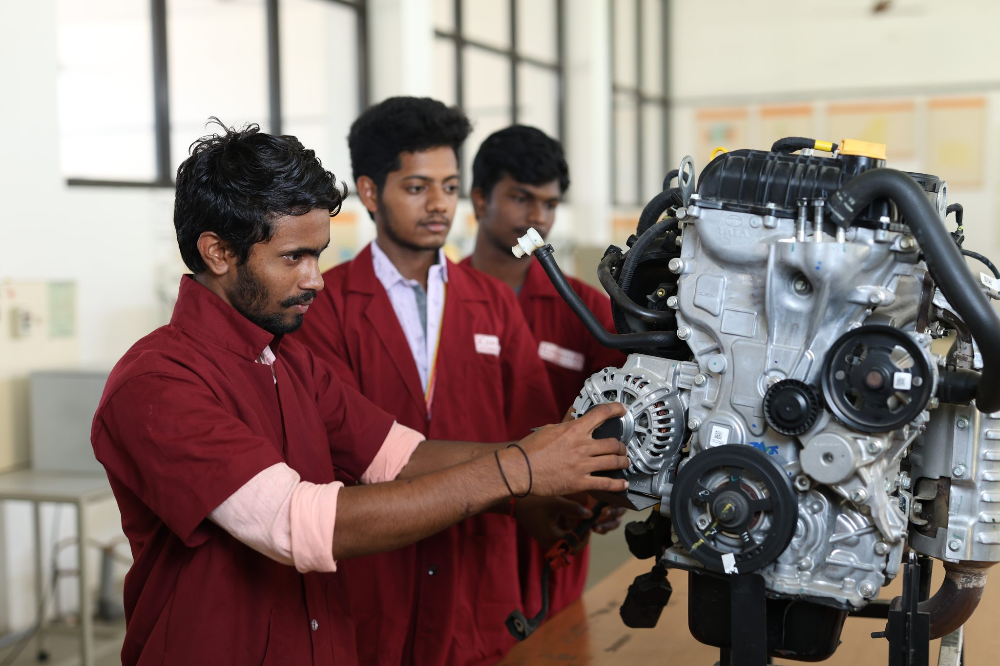
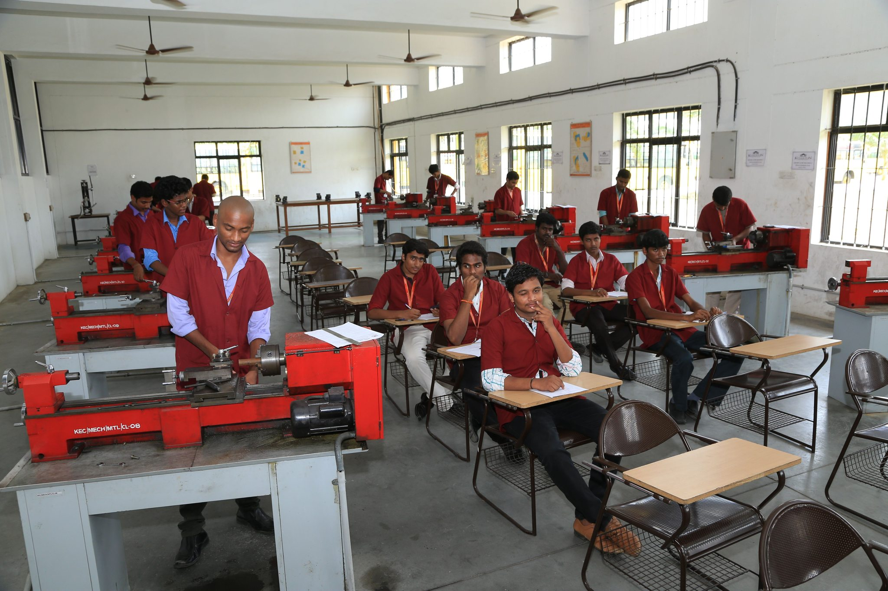
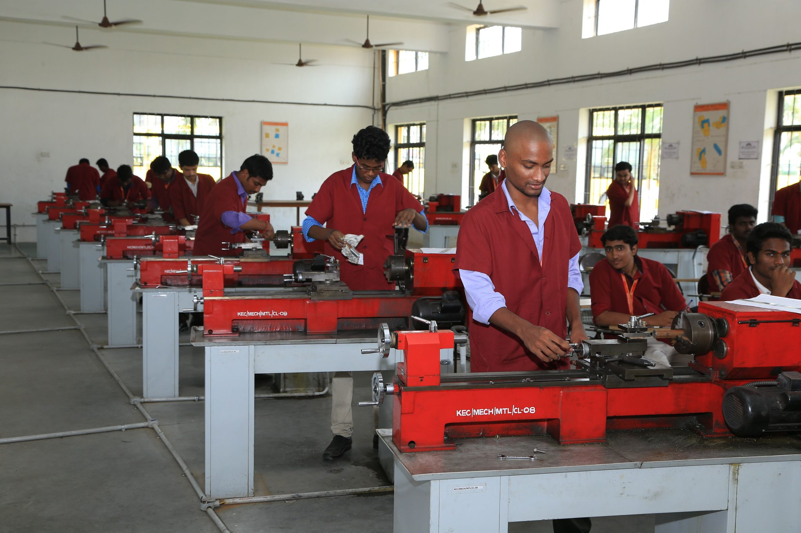

PRACTICAL LABORATORY
OVERVIEW
The Department of Mechanical Engineering at Kingston Engineering College houses state-of-the-art mechanical laboratory facilities designed to provide students with hands-on practical experience in manufacturing processes, thermal engineering, fluid mechanics, and material testing. The labs are equipped with modern machinery including CNC milling machines, lathes, welding equipment, and material testing apparatus.
The Mechanical labs support curriculum delivery, project-based learning, industry-sponsored training, and research activities in engineering design, CAD/CAM, workshop practices, and material characterization.
MECHANICAL LABORATORY
The Mechanical Engineering Laboratory provides students with hands-on experience in manufacturing processes, thermal engineering, fluid mechanics, and material testing. The lab houses modern machinery including CNC milling machines, lathes, welding equipment, and material testing apparatus. Students gain practical knowledge of engineering design, CAD/CAM software, and workshop practices essential for mechanical engineering professionals.



Key Equipment & Capabilities: CNC Lathe & Milling Machines, Universal Testing Machine (UTM), Hardness Testers, Welding Stations (Arc, TIG, MIG), 3D Printer, and CAD/CAM software suite (SolidWorks, AutoCAD, CATIA).